Section 1: Troubleshooting and OS Management
Question 1: Wi-Fi TroubleshootingQuestion 1 of 71
A help desk technician is troubleshooting Wi-Fi connectivity issues on a user's mobile phone. Restarting the phone and router did not resolve the issue. Which next step should a help desk technician take to attempt to resolve the issue?
Correct Answer: A. Reset the network settings to default.
Question 2: IP Address IdentificationQuestion 2 of 71
Analyze the network configuration and answer the questions.
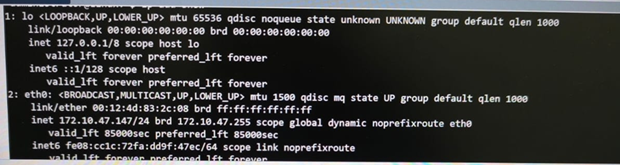
Question Answer
What happens if you send a message to 172.10.47.255?
Select...
The message is sent to all computers on the network.
A reply is sent from the loopback address.
Is 172.10.47.254 on the same network?
Select...
True
False
What is the IP address of the physical network adapter?
Select...
127.0.0.1
172.10.47.255
172.10.47.147
Correct Answers: Broadcast Message: Sending to .255 sends the message to all computers on the subnet.Same Network: True. 172.10.47.254 is a valid host IP on the same 172.10.47.x subnet.Physical Adapter: 172.10.47.147 is the specific IP assigned to the adapter in this scenario.
Question 3: Closing Unresponsive ApplicationsQuestion 3 of 71
You need to help a Windows user close some Microsoft Edge pages that are no longer responding. You guide them to Task Manager. Which tab will allow the user to close a task?
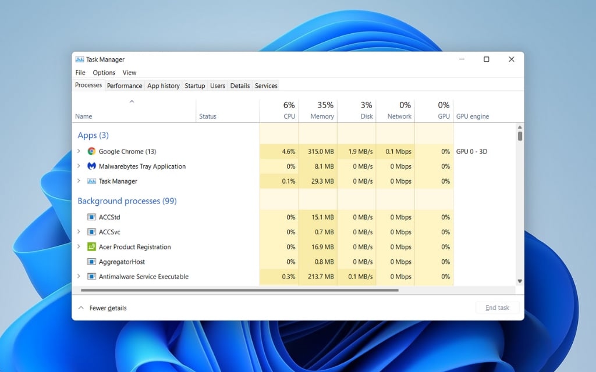
Correct Answer: A. Processes. Processes tab in Windows Task Manager lists all running applications and background processes. From here, a user can select an unresponsive application and click "End task" to force it to close.
Question 4: WLAN Connection Issues After UpdateQuestion 4 of 71
A user reports that they have not been able to connect their phone to the WLAN since updating it. For each condition, select True if the condition could relate to the issue or False if it has no relationship.
Condition Answer
The phone is in Airplane Mode.
Select... True False
The phone is on a different carrier network.
Select... True False
The phone's personal hotspot option is turned off.
Select... True False
Correct Matches: Airplane Mode: True. Airplane mode disables all wireless radios, including Wi-Fi.Different Carrier: False. The cellular carrier is separate from WLAN (Wi-Fi) connectivity.Hotspot Off: False. The hotspot feature allows a phone to share its cellular data; it does not affect its ability to connect to a Wi-Fi network.
Question 5: Password SecurityQuestion 5 of 71
Which password is most secure?
Correct Answer: B. ILOveP@nc@Ke$.
Question 6: Application Installation without Admin RightsQuestion 6 of 71
A user is trying to install a productivity application by downloading it from the vendor's website. A user account control message prompts them for administrative login. They do not have administrator credentials. What should you do?
Correct Answer: B. Tell the user to submit an IT ticket to get approval for the application.
Question 7: Managing Microsoft Office Files on Google DriveQuestion 7 of 71
An employee is struggling with using Google Drive for storing Microsoft Office files that they create and edit on their PC using custom templates. Company policy encourages all employees to store their files on Google Drive. What should you recommend?
Correct Answer: B. Instruct the employee to download and install Google Drive for Desktop.
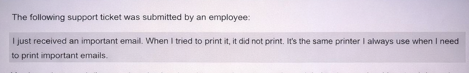
Question 8: Printer Troubleshooting Post-OutageQuestion 8 of 71
Question 8:The following support ticket was submitted by an employee:
You investigate and discover that the local workgroup printer was unplugged during the evening. You plug it in, and the printer restarts successfully.
You establish a Remote Desktop session with the computer having the problem and attempt to print the file again. The files still do not print.
What should you do next?
Correct Answer: A. Clear the print queue and try to print again.
Question 9: IPv6 Address TypesQuestion 9 of 71
Which IPv6 address would be assigned by DHCPv6 to a host that needs to reach IPv6-only resources on the internet?
Correct Answer: A. 2001:1db8:1234::1. 2000::/3 range are Global Unicast Addresses (GUA). `fe80::` is a non-routable Link-Local address, `fd...` is a non-routable Unique Local Address, and `ff...` is a Multicast address.
Question 10: Device Manager Malfunction IndicatorQuestion 10 of 71
A help desk technician is using Windows Device Manager to troubleshoot a hardware issue reported by a user. Which indicator identifies a device that might be malfunctioning?
Correct Answer: A. A yellow exclamation mark icon.
Question 11: Remote Support Tool for Unattended AccessQuestion 11 of 71
You need to provide remote technical support to a colleague who is encountering computer issues while working from home on their Windows 11 computer. The colleague needs you to troubleshoot and resolve the problem while they are at lunch. Which tool should you use?
Correct Answer: B. Remote Desktop Protocol (RDP).
Question 12: WebEx Audio Troubleshooting (User Cannot Be Heard)Question 12 of 71
You connect with a client over WebEx. You can hear the client speaking but they cannot hear you. Which three things should you check to get your audio working properly? (Choose 3)
Correct Answers: A, B, and E.
Question 13: Identifying and Responding to PhishingQuestion 13 of 71
Jason states he received the following email from the Human Resources Department. What should you tell Jason to do?
To: jason@sunsetweb.com
From: hrdept@mybenefits.biz
Subject: Policy Change
Dear Employee:
Your benefits policy is changing at the end of the month. Please click this link to register for a consultation. Failure to register by the end of the month will result in loss of benefits.
Sincerely,
Human Resources Department
Correct Answer: D. Report the email to the IT department that handles threats at their company, then delete the email.
Question 14: DNS Query Command-Line ToolQuestion 14 of 71
You are investigating a DNS problem. Which command can you use to query DNS records from a command-line interface?
Correct Answer: C. nslookup.
Question 15: Diagnosing PC Performance IssuesQuestion 15 of 71
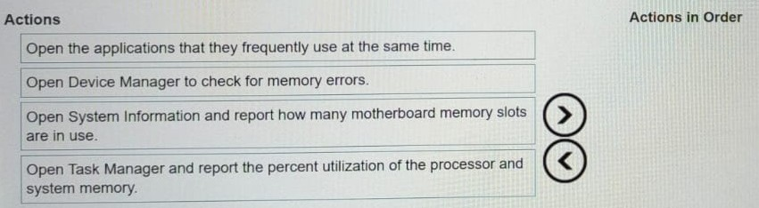
A customer complains that the performance of their PC is severely impacted when several applications are open at the same time. You suspect that a memory upgrade might fix the problem. Which two actions should you ask the user to complete in sequence?
Available Options
Open Task Manager and report the percent utilization of the processor and system memory.
Restart the computer in Safe Mode.
Open the applications that they frequently use at the same time.
Run a full system antivirus scan.
Your Answer (Order Matters)
Drag the 2 correct steps here in order
Correct Order: 1. Open Applications, 2. Check Task Manager.
Question 16: Troubleshooting a Networked PrinterQuestion 16 of 71
A customer reports they are unable to print to a networked printer. The job is pending in the taskbar. They have already tried printing a test page with no success. You suspect the printer is unavailable. What should you do next?
Correct Answer: D. Test the printer's network connectivity.
Question 17: Identity Verification for Password ResetQuestion 17 of 71
An end user calls you via telephone stating they are Jane Doe and need an immediate password reset to process payroll. What should you do?
Correct Answer: C. Call Jane Doe's manager using their company number to verify Jane Doe's needs and identity.
Question 18: Identifying Sensitive PIIQuestion 18 of 71
Company policy states that all sensitive PII will be removed from company servers after 3 months of inactivity. A user requests verification that their data was removed. You check the server and see some user data is still present. Which data should have been removed?
Correct Answer: E. Driver's License Number.
Question 19: Identifying Computer Components for CPU UpgradeQuestion 19 of 71
A technician needs to upgrade the CPU of a user's desktop computer. The technician opens the computer and sees the internal components. Which letter identifies the component you need to remove to locate the CPU?
Correct Answer: B. B.
Question 20: Examples of Personally Identifiable Information (PII)Question 20 of 71
Which three individual pieces of information are personally identifiable information (PII) and should be protected to safeguard an individual's privacy? (Choose 3)
Correct Answers: B, D, and E. Social Security Number and Credit card number are highly sensitive unique identifiers. Place of birth , especially when combined with other data, is also considered PII. While an email address (C) is also PII, the provided answer key implies B, D, and E are the intended correct choices.
Question 21: Configuring Dual MonitorsQuestion 21 of 71
A user has added a second monitor but sees the same image on both screens. They want to view different documents on each monitor. Which display mode should they configure?
Correct Answer: B. Extend these displays.
Question 22: Understanding AI ConceptsQuestion 22 of 71
You consider using AI to find solutions to common Help Desk issues. For each statement about AI, select True or False.
Statement Answer
Predictive AI uses historical data to forecast future outcomes.
Select... True False
Generative AI creates new content based on trained, unstructured data.
Select... True False
Generative AI is more reliable than predictive AI.
Select... True False
Correct Matches: Predictive AI: True. Its purpose is to analyze past data to predict future events.Generative AI: True. It learns from existing data to generate new, original content.Reliability: False. Reliability depends on the specific model, data, and application. Neither type is inherently more reliable than the other.
Question 23: Identifying Interface TypesQuestion 23 of 71
Identify the interface types for the ports shown in the image (from Left to Right).
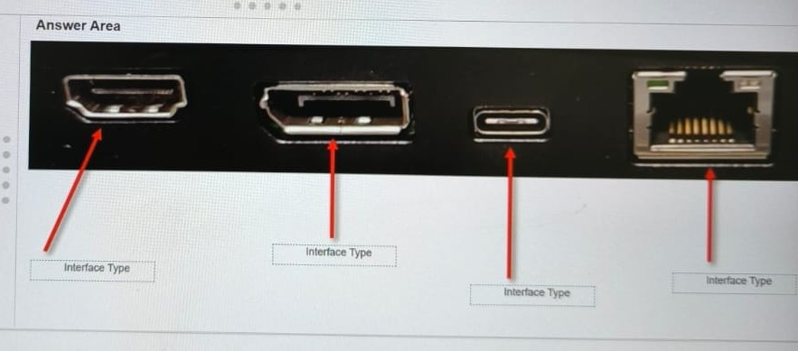
Port Position Interface Type
Port 1 (Leftmost)
Select...
HDMI
DisplayPort
USB-C
LAN
Port 2
Select...
HDMI
DisplayPort
USB-C
LAN
Port 3
Select...
HDMI
DisplayPort
USB-C
LAN
Port 4 (Rightmost)
Select...
HDMI
DisplayPort
USB-C
LAN
Correct Identification: HDMI , DisplayPort , USB-C , and LAN .
Question 24: Closing Unresponsive Processes on macOSQuestion 24 of 71
A macOS user needs help closing some Safari processes that are no longer responding. Which option will close the processes in Activity Monitor?
Correct Answer: B. Force Quit. Activity Monitor . The standard method to terminate an unresponsive application is to select it and use the Force Quit option, which is the macOS equivalent of "End Task" in Windows.
Question 25: Purpose of a Queue Management SystemQuestion 25 of 71
What is the purpose of a queue management system for a help desk?
Correct Answer: B. It ensures that customer issues are addressed fairly and timely.
Question 26: Identifying Cable ConnectorsQuestion 26 of 71
Identify the cable connectors shown in the image (from Left to Right or top-down relative to the prompt list).
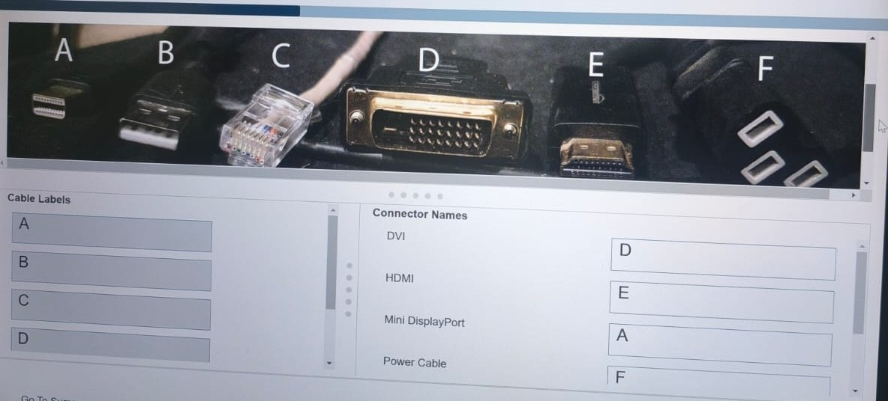
Connector Type
Connector 1
Select...
Mini DisplayPort
USB-A
RJ-45
DVI
HDMI
Power Cable
Connector 2
Select...
Mini DisplayPort
USB-A
RJ-45
DVI
HDMI
Power Cable
Connector 3
Select...
Mini DisplayPort
USB-A
RJ-45
DVI
HDMI
Power Cable
Connector 4
Select...
Mini DisplayPort
USB-A
RJ-45
DVI
HDMI
Power Cable
Connector 5
Select...
Mini DisplayPort
USB-A
RJ-45
DVI
HDMI
Power Cable
Connector 6
Select...
Mini DisplayPort
USB-A
RJ-45
DVI
HDMI
Power Cable
Correct Identification: Mini DisplayPort , USB-A , RJ-45 (Ethernet), DVI , HDMI , and Power Cable .
Question 27: Identifying Windows ToolsQuestion 27 of 71
Identify the Windows tools shown in the image (labeled 1 to 4).
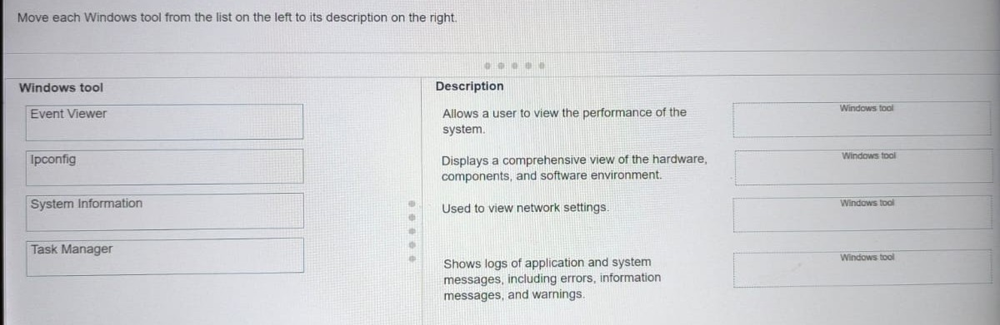
Tool Position Tool Name
Tool 1
Select...
Task Manager
System Info
Ipconfig
Event Viewer
Tool 2
Select...
Task Manager
System Info
Ipconfig
Event Viewer
Tool 3
Select...
Task Manager
System Info
Ipconfig
Event Viewer
Tool 4
Select...
Task Manager
System Info
Ipconfig
Event Viewer
Correct Identification: Task Manager , System Info , Ipconfig , and Event Viewer .
Question 28: Opening Task Manager in WindowsQuestion 28 of 71
A user reports that a Windows application is frozen. Which three methods can you use to direct the user to open a tool that can be used to close the application? (Choose 3)
Correct Answers: A, C, and E.
Question 29: Initial Response to Application CrashQuestion 29 of 71
A user calls the help desk and states that their computer crashes every time they use a specific application. What should be your initial response?
Correct Answer: C. Ask the user to provide detailed information about actions leading up to the crash and error messages displayed.
Question 30: Operating Systems Supporting Remote DesktopQuestion 30 of 71
Which two operating systems support Remote Desktop client connections? (Choose 2)
Correct Answers: A and B.
Question 31: Resolving a Printer Driver FailureQuestion 31 of 71
Which action must a service desk technician take to resolve a printer driver failure on a desktop PC?
Correct Answer: A. Update the device driver software.
Question 32: Matching Windows Tools to ScenariosQuestion 32 of 71
Match each Windows tool to its appropriate usage scenario.
Usage Scenario Windows Tool
The technician is helping a user set up multiple monitors so they can work more efficiently.
Select a tool... Device Manager Disk Management Display Settings Task Manager
The technician advises a user on how to prepare a new external hard drive for file backup by formatting it and assigning a drive letter.
Select a tool... Device Manager Disk Management Display Settings Task Manager
To address complaints of a sluggish computer, the technician guides the user through identifying programs that are consuming too much system resources.
Select a tool... Device Manager Disk Management Display Settings Task Manager
A user is having trouble with their newly connected webcam not functioning correctly, and the technician needs to verify the driver installation.
Select a tool... Device Manager Disk Management Display Settings Task Manager
Correct Matches:
Multiple monitors: Display SettingsFormatting a new drive: Disk ManagementHigh resource consumption: Task ManagerVerifying driver installation: Device Manager
Question 33: Checking USB Ports for ErrorsQuestion 33 of 71
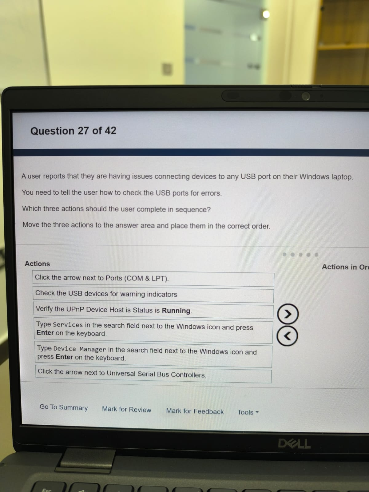
A user reports that they are having issues connecting devices to any USB port on their Windows laptop. You need to tell the user how to check the USB ports for errors. Drag the actions into the correct sequence.
Available Actions
Check the USB devices for warning indicators.
Type Device Manager in the search field next to the Windows icon and press Enter on the keyboard.
Click the arrow next to Universal Serial Bus Controllers.
Correct Sequence
Drag the actions here in the correct order (1-3)
Correct Order:
Question 34: Problem-Solving Methodology for IP IssuesQuestion 34 of 71
A user is unable to connect to the network. You suspect an IP configuration issue. Match each task to its problem-solving step.
Problem-Solving Step Task
Gather detailed information.
Select a task... Log the new network settings into the ticketing system. Modify the IP settings on the user's computer. Ping a remote device from the user's computer. Run ipconfig or ifconfig.
Implement the plan.
Select a task... Log the new network settings into the ticketing system. Modify the IP settings on the user's computer. Ping a remote device from the user's computer. Run ipconfig or ifconfig.
Observe the results of the implementation.
Select a task... Log the new network settings into the ticketing system. Modify the IP settings on the user's computer. Ping a remote device from the user's computer. Run ipconfig or ifconfig.
Document the changes made to solve the problem.
Select a task... Log the new network settings into the ticketing system. Modify the IP settings on the user';s computer. Ping a remote device from the user's computer. Run ipconfig or ifconfig.
Correct Matches: Gather information: Run `ipconfig` to see the current configuration.Implement plan: `Modify the IP settings` based on your findings.Observe results: `Ping a remote device` to test if the change worked.Document changes: `Log the new settings` in the ticket.
Question 35: Steps in the Problem-Solving ProcessQuestion 35 of 71
Which three steps are part of the problem-solving process? (Choose 3)
Correct Answers: A, C and D.
Question 36: File Access Permission IssueQuestion 36 of 71
John Douglas cannot view a specific Test.docx file on a mapped network drive, but can access other files. The owner says they gave John access. Which setting was misconfigured?
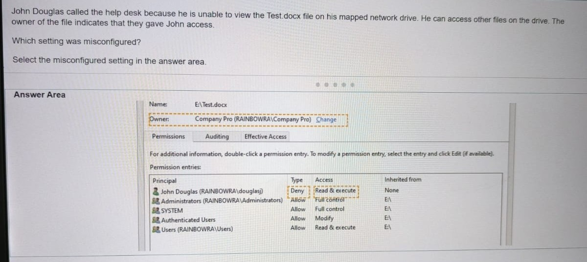
Correct Answer: C. Deny.
Question 37: Impersonation Attack TypeQuestion 37 of 71
You receive a call from someone claiming to work in your company's networking department. This person attempts to persuade you to use the Wi-Fi details they provide. You suspect an attempted impersonation attack. Which type of attack is this?
Correct Answer: B. A Man-in-the-Middle attack.
Question 38: Configuring Virtual Machine ResourcesQuestion 38 of 71
A new employee complains that her virtual machine is very slow. You suspect that her machine needs more resources allocated to it. How can the virtual machine be configured with more resources?
Correct Answer: B. Resources can be added from the hypervisor software.
Question 39: Configuring Microsoft Teams to Auto-StartQuestion 39 of 71
A user needs assistance configuring Microsoft Teams so that it will start automatically. Which category in Teams settings should the user select to set the application to auto-start?
Correct Answer: B. General.
Question 40: Checking Available MemoryQuestion 40 of 71
A customer reports getting "low on memory" errors when running video editing software. Which process will allow the customer to locate the available memory of their device?
Correct Answer: C. Ask the customer to open Task Manager and select the Performance tab.
Question 41: Diagnosing a DNS IssueQuestion 41 of 71
An employee can open a website by its IP address but not its name. The `ipconfig` output is shown. Which IP address should you ping to determine what the problem is?
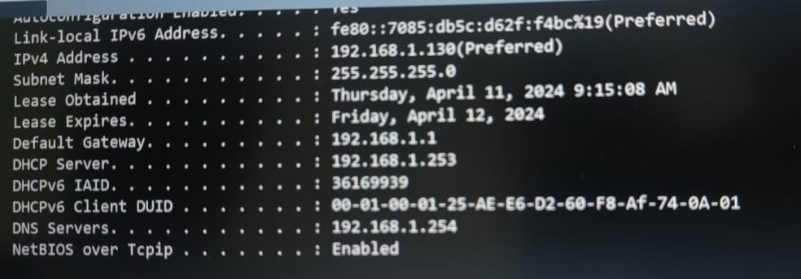
Correct Answer: D. 192.168.1.1. 192.168.1.1 . To diagnose the problem, you must test connectivity to the DNS server itself. Pinging this address will determine if the PC can reach the server responsible for name lookups.
Question 42: Increasing iPhone StorageQuestion 42 of 71
A user has low storage on an iPhone. You need to tell the user how to increase available storage. For each action, select Yes if it helps or No if it does not.
Action Answer
Offload unused apps.
Select... Yes No
Empty the Recently Deleted album.
Select... Yes No
Enable Optimize Photos.
Select... Yes No
Correct Matches: Offload unused apps: Yes. This removes the app but keeps its data, freeing up significant space.Empty Recently Deleted album: Yes. Deleted photos are kept for 30 days; emptying the album permanently deletes them and reclaims space immediately.Enable Optimize Photos: Yes. This stores full-resolution photos in iCloud and keeps smaller, device-sized versions on the iPhone, saving space.
Question 43: Type of Virtualization for Remote OSQuestion 43 of 71
Which type of virtualization allows a user to run one or multiple operating systems that are stored remotely on a central server in a data center?
Correct Answer: C. Desktop Virtualization.
Question 44: Handling Sensitive Customer DataQuestion 44 of 71
A customer support representative receives an email from a client that contains their full name, address, and credit card details and a request to update their billing information. Which action should the representative take?
Correct Answer: A. Store the data in encrypted storage.
Question 45: Purpose of Mobile Device Management (MDM)Question 45 of 71
Why does a company use Mobile Device Management (MDM)?
Correct Answer: C. To ensure that mobile devices comply with company policy before accessing the network.
Question 46: Setting Up Access to a Shared FolderQuestion 46 of 71
A help desk technician is assisting a customer with setting up access from their Windows computer to a shared company folder. What should the technician do?
Correct Answer: A. Choose a drive letter and specify the path to the shared folder.
Question 47: Documenting a Resolved IncidentQuestion 47 of 71
You resolve a customer's printing issue. How should you document the incident?
Correct Answer: C. "Printing issue is resolved. Reinstalled printer drivers and rebooted computer."
Question 48: Cross-Platform USB Drive IssueQuestion 48 of 71
A customer has a 256 GB USB drive. They can copy files from their Windows work computer to the drive, but cannot copy files from their personal macOS computer to the drive. What should the customer do?
Correct Answer: D. Format the USB drive with exFAT file system.
Question 49: A Windows user reports the following:Question 49 of 71
The computer is a member of an Active Directory domain. You open Active Directory Users and Computers.
For each statement, select True if it is a method the technician can use to resolve the login issue or False if the method will not resolve the problem.
Note: You will receive partial credit for each correct selection.
Statement Answer
In the user account properties, select Password never expires.
Select... True False
Unlock the user account and have them try their password again.
Select... True False
Reset the user's password.
Select... True False
Select User must change password at next logon.
Select... True False
Correct Matches: Password never expires: False. This is a policy setting, not a direct fix for a current login failure.Unlock the account: True. The account may be locked out due to too many failed attempts. Unlocking it is a direct resolution.Reset the password: True. If the user has forgotten their password, resetting it is a direct resolution.User must change password...: False. This is an option used *with* a password reset, not a standalone solution to a login failure.
Question 50: Ethical Considerations of AI - TransparencyQuestion 50 of 71
There are several ethical considerations involved when choosing to use artificial intelligence (AI). What does the term "transparency" refer to in relation to those ethical considerations?
Correct Answer: C. Informing a customer when AI is being used to make a decision that could affect them.
Question 51: Best Practices for Help Desk DocumentationQuestion 51 of 71
Which three practices help create clear, concise, and factual documentation for an IT help desk ticket? (Choose 3)
Correct Answers: A, C, and D.
Question 52: External Drive Not Appearing in ExplorerQuestion 52 of 71
I cannot access files from my external disk drive on my Windows 10 laptop. The disk drive is not listed in Windows Explorer. I can access the files just fine on my other laptop that has the same operating system and drivers installed.
Action Answer
Enable the drive in Device Manager.
Select... Yes No
Format the drive in Disk Management.
Select... Yes No
Map the drive to a letter in Windows Explorer.
Select... Yes No
Correct Matches: Enable in Device Manager: Yes. The drive might be recognized by the system but disabled. Enabling it would make it accessible.Format the drive: No. Formatting would erase all data and should not be a first step, especially since the drive works on another computer.Map the drive: No. Mapping is for network shares, not for a locally connected external drive that isn't being detected. The issue is detection, not access path.
Question 53: Best Practices for Technical DocumentationQuestion 53 of 71
Your company is implementing a new customer relationship management system.
You have been asked to update internal technical documentation as part of your professional responsibilities.
Select True if the statement is considered a professional best practice for creating and verifying documentation to be used to solve technical issues and False if it is not.
Statement Answer
Including visuals is unnecessary, as most documentation is meant for other IT professionals.
Select... True False
You should keep all previous documentation materials, problems and solutions.
Select... True False
While generative AI can provide information, you should check its work before including it in formal documentation.
Select... True False
Correct Matches: Visuals unnecessary: False. Visuals like screenshots and diagrams are extremely helpful for clarity, even for technical professionals.Keep previous materials: True. Historical documentation provides valuable context and can help solve recurring or similar issues.Check AI work: True. Generative AI can make mistakes (";hallucinate"). All information from it must be verified for accuracy before being formalized.
Question 54: Responding to a Suspected Phishing EmailQuestion 54 of 71
You receive an email from a user with the display name of the president of your company. The email requests that you log into the provided link to fill out a survey by the end of the business day. What should you do?
Correct Answer: A. Call the IT department to verify that the email is valid.
Question 55: Troubleshooting a WebcamQuestion 55 of 71
You receive a call from a user stating that their webcam stopped working. There have been no operating system updates since it was last working. Which action should you tell the user to perform first?
Correct Answer: D. Check webcam cable for connectivity.
Question 56: Granting App Permissions on macOSQuestion 56 of 71
A user reports: "I recently got a prompt on my Mac to give an app permission. I accidentally clicked Deny. Now I can't open the app." Where should they go to grant the necessary permissions?
Correct Answer: C. Privacy and Security.
Question 57: Safety Procedures for Installing an SSDQuestion 57 of 71
You are adding a new SSD to a computer. Complete the sentences by selecting the correct safety procedure.
Sentence Part Correct Option
Ensure that the computer remains...
Select... plugged into a grounded outlet and turned off at the power supply plugged into an ungrounded outlet and turn on
Discharge static electricity by...
Select... sitting on a plastic chair standing barefoot on carpet touching
Be sure to ground yourself... installing the new SSD.
Select... before after
Correct Selections: "...plugged into a grounded outlet and turned off at the power supply." (This keeps the case grounded). "...touching" (a metal part of the case to equalize potential). "...before" (you handle the sensitive component).
Question 58: Resolving Login Issue After MFA ImplementationQuestion 58 of 71
A user returning from a 30-day vacation cannot log in, though their password is correct and not expired. While they were gone, the company implemented mandatory Multi-Factor Authentication (MFA). Which two actions could resolve the problem? (Choose 2)
Correct Answers: C and D.
Question 59: Configuring Power Management SettingsQuestion 59 of 71
Configure a laptop's power settings to meet these requirements: Display off after 15 mins of inactivity. Sleep after 30 mins of inactivity. Never hibernate.
Select the correct options in the Power & Sleep settings window.
Setting Value
On battery power, turn off after
Select... 15 minutes 30 minutes Never
When plugged in, turn off after
Select... 15 minutes 30 minutes Never
On battery power, PC goes to sleep after
Select... 15 minutes 30 minutes Never
When plugged in, PC goes to sleep after
Select... 15 minutes 30 minutes Never
Correct Selections: The requirements apply regardless of power source.
Screen off after: 15 minutes (for both "On battery" and "When plugged in").PC goes to sleep after: 30 minutes (for both "On battery" and "When plugged in").Hibernate settings would be configured in advanced power options and set to "Never".
Question 60: Information from the `ipconfig` CommandQuestion 60 of 71
A network technician runs the `ipconfig` command on a client's Windows computer. Which two pieces of information can they expect to obtain? (Choose 2)
Correct Answers: B and E.
Question 61: Defining a Service Level Agreement (SLA)Question 61 of 71
Which document outlines a commitment between an organization and a customer, including details of the service, the standards the provider must adhere to, and compensation for the successful completion of those milestones?
Correct Answer: D. Service Level Agreement.
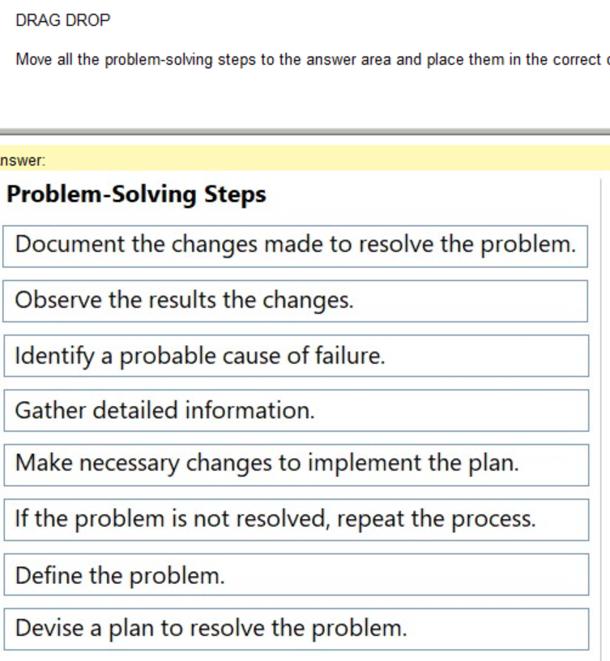
Question 62: Ordering the Problem-Solving StepsQuestion 62 of 71
Move all the problem-solving steps to the answer area and place them in the correct order.
Available Steps
Devise a plan to resolve the problem.
If the problem is not resolved, repeat the process.
Gather detailed information.
Observe the results of the changes.
Identify a probable cause of failure.
Document the changes made to resolve the problem.
Define the problem.
Make necessary changes to implement the plan.
Correct Order
Drag the 8 steps here in the correct order
Correct Order:
Question 63: Negative Effects of Manual IP ConfigurationQuestion 63 of 71
In an office that uses a DHCP server, a user's computer was configured with a manual IP address. Which two possible negative effects could this have? (Choose 2)
Correct Answers: A and C.
Question 64: Diagnosing a Scanner Issue in Device ManagerQuestion 64 of 71
A customer cannot scan. In Device Manager, the scanner is listed under "Other devices". What is the problem and what should you do?
Question Answer
What is the problem?
Select... The scanner is not connected to the correct port. The appropriate device drivers are not installed. The scanner is not recognized by the operating system.
What should you do in Device Manager to resolve the issue?
Select... Disable the device. Update the driver. Connect the scanner to a different port.
Correct Selections: Problem: The appropriate device drivers are not installed. When Windows recognizes a device but doesn't know what it is or how to control it, it places it under "Other devices". This is a classic sign of a missing driver.Solution: Update the driver. You need to install the correct driver software so that Windows can properly communicate with the scanner.
Question 65: Example of a Strong PasswordQuestion 65 of 71
Provide an example of a strong password based on these guidelines: 8-15 chars, lowercase letters, at least 2 numbers, must begin and end with a letter, special chars allowed are - _ # @.
Correct Answer: D. mkn546#f.
Question 66: Ensuring Accuracy in Technical ResearchQuestion 66 of 71
When researching a technical issue and updating internal documentation, what is the best approach to ensure the information you retrieve is accurate and reliable?
Correct Answer: D. Verify information using multiple sources.
Question 67: Next Step in Problem-Solving ProcessQuestion 67 of 71
A user calls help desk to report that they cannot connect to the company’s internal WiFi network.
The help desk technician is following the problem-solving process to resolve the user’s issue. After defining the problem and gathering detailed information, the technician suspects the most probable cause of the issue is a misconfiguration in the user’s network settings.
What should the technician do next?
Correct Answer: D. Consider the probable cause for the failure by checking whether other users are affected.
Question 68: Verifying Identity to Prevent Social EngineeringQuestion 68 of 71
You receive an email request for personal information. You need to make sure you are working with the right individual to avoid a social engineering attempt. Which step should you take?
Correct Answer: C. Use company approved methods to confirm the individual's identity.
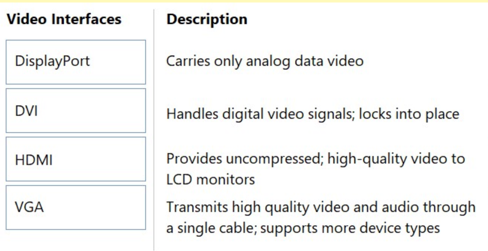
Question 69: Matching Video Interfaces to DescriptionsQuestion 69 of 71
Match each video interface to its description.
Description Video Interface
Carries only analog video data
Select... DisplayPort DVI HDMI VGA
Handles digital video signals; often has screws to lock into place
Select... DisplayPort DVI HDMI VGA
Provides uncompressed, high-quality digital video; often has a locking mechanism
Select... DisplayPort DVI HDMI VGA
Transmits high quality video and audio through a single cable
Select... DisplayPort DVI HDMI VGA
Correct Matches: Analog only: VGADigital with screws: DVIDigital with lock: DisplayPortDigital video and audio: HDMI
Question 70: Trouble Ticket Documentation Best PracticesQuestion 70 of 71
Joe calls in to report internet outages. A customer service technician enters the trouble ticket shown below. Review the trouble ticket below and classify which parts of the ticket follow documentation best practices.
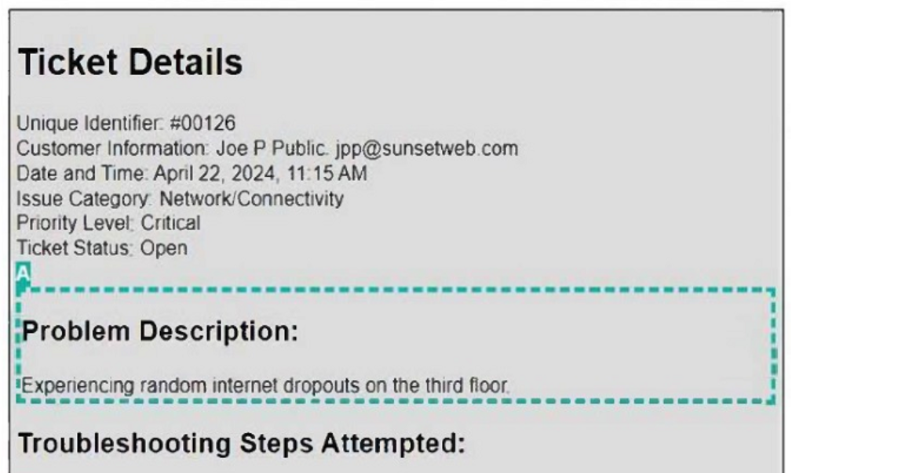
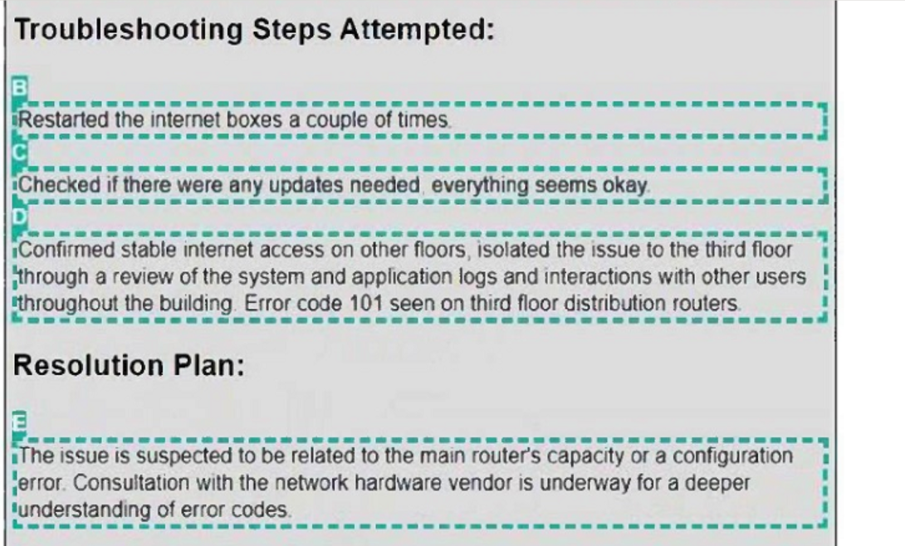
Ticket Section Assessment
Unique Identifier
Select...
Follows Best Practice
Does Not Follow Best Practice
Problem Description
Select...
Follows Best Practice
Does Not Follow Best Practice
Priority Level
Select...
Follows Best Practice
Does Not Follow Best Practice
Date and Time
Select...
Follows Best Practice
Does Not Follow Best Practice
Troubleshooting Steps Attempted
Select...
Follows Best Practice
Does Not Follow Best Practice
Correct Assessment: Unique Identifier: Follows. Every ticket needs a unique ID.Problem Description: Does Not Follow. It is often vague or missing in poor documentation.Priority Level: Does Not Follow. Setting "Critical" for a single user issue is often incorrect categorization.Date and Time: Follows. Accurate timestamps are essential.Troubleshooting Steps: Follows. Recording specific actions taken (like isolation steps) is best practice.
Question 71: Resolving File Edit PermissionsQuestion 71 of 71
John cannot edit the file Test.docx on a shared drive, but can edit other files. You review the file's permissions. Which change will allow John to access and edit the file, while retaining account-level control?
Correct Answer: B. Modify the NTFS permissions on the file to grant John 'Modify' or 'Full Control' access.